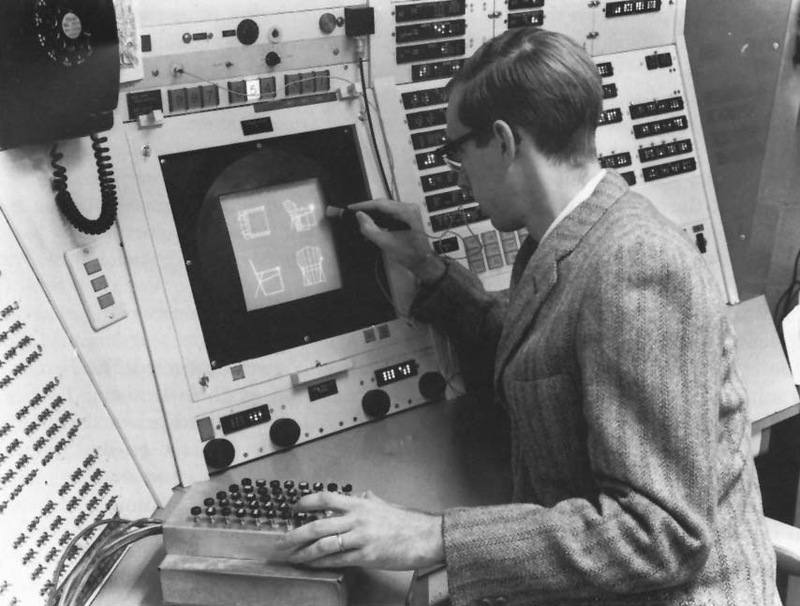

Проект виконала ст. гр. 3КН-18б Андрієвська Анастасія Едуардівна
Oбласті застосування Растрова графіка Векторна графіка Фрактальна графіка Комп'ютерна 3D-графікаКомп'ютерна графіка — 1) в науці — розділ інформатики, який вивчає методи цифрового синтезу і обробки візуального контенту; 2) вид сучасного мистецтва, яке також називають цифровим, що входить до загального медіа-арту — зображення, які створюються, перетворюються, оцифровуються, обробляються і виводяться засобами обчислювальної техніки, включаючи апаратні і програмні засоби, рухома комп'ютерна графіка називається комп'ютерним відео або комп'ютерною анімацією.
Робота з комп'ютерною графікою — один з найпопулярніших напрямків використання персонального комп'ютера, до того ж виконують цю роботу не тільки професійні художники і дизайнери. На будь-яких підприємствах іноді виникає необхідність подачі рекламних оголошень в газетах і журналах або просто у випуску рекламної листівки або буклету.
Без комп'ютерної графіки не обходиться жодна сучасна мультимедійна програма. Робота над графікою становить до 90 % робочого часу програмістських колективів, які випускають програми масового використання.
Розрізняють 3 види комп'ютерної графіки. Це растрова графіка, векторна графіка і фрактальна графіка. Вони відрізняються принципами формування зображення при відображенні на екрані монітора або при друці на папері.
Більшість графічних редакторів, призначених для роботи з растровими ілюстраціями, орієнтовані більше на обробку, а не створення зображення. В Інтернеті поки що використовують тільки растрові ілюстрації.
Програмні засоби для роботи з векторною графікою призначені найперше для створення ілюстрацій і менше для їхньої обробки. Такі засоби широко використовують в рекламних агентствах, дизайнерських бюро, редакціях і виданнях. Оформлювальні роботи із застосуванням шрифтів і простих геометричних елементів, вирішуються засобами векторної графіки набагато простіше. Існують приклади високохудожніх творів, створених засобами векторної графіки, але вони скоріше винятки, ніж правило, оскільки художня підготовка ілюстрацій засобами векторної графіки надзвичайно складна.
Програмні засоби для роботи з фрактальною графікою призначені для автоматичної генерації зображення шляхом математичних розрахунків. Створення фрактальної художньої композиції полягає не в рисуванні чи оформленні, а в програмуванні. Фрактальну графіку рідко використовують для створення друкованих або електронних документів, але її часто використовують у розважальних програмах.
Перші обчислювальні машини не мали окремих засобів для роботи з графікою, але використовувалися для отримання і обробки зображень. Програмуючи пам'ять перших електронних машин, побудовану на основі матриці ламп, можна було отримувати візерунки.
У 1961 році програміст С. Рассел очолив проект зі створення першої комп'ютерної гри з графікою. Створення гри («Spacewar!») тривало приблизно 200 людино- годин. Гра була створена на машині PDP-1.
У 1963 році американський вчений Айвен Сазерленд створив програмно-апаратний комплекс Sketchpad, який дозволяв малювати крапки, лінії і кола на трубці цифровим пером. Підтримувалися базові дії з примітивами: переміщення, копіювання та ін. По суті, це був перший векторний редактор, реалізований на комп'ютері. Також програму можна назвати першим графічним інтерфейсом, причому вона була такою ще до появи самого терміна.
У середині 1960-х рр. з'явилися розробки в промислових додатках комп'ютерної графіки. Так, під керівництвом Т. Мофетта і Н. Тейлора фірма Itek розробила цифрову електронну креслярську машину. У 1964 році General Motors представила систему автоматизованого проектування DAC-1, розроблену спільно з IBM.
У 1964 році групою під керівництвом Н. Н. Константинова була створена комп'ютерна математична модель руху кішки. Машина БЕСМ-4, виконуючи написану програму рішення диференційних рівнянь, малювала мультфільм «Кішечка», який для свого часу був проривом. Для візуалізації використовувався алфавітно-цифровий принтер.
У 1968 році суттєвий прогрес комп'ютерна графіка зазнала з появою можливості запам'ятовувати зображення і виводити їх на комп'ютерному дисплеї, електронно- променевій трубці.
Матеріали